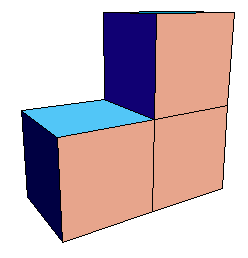
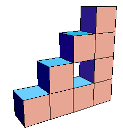
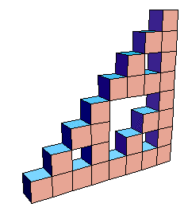

|  |  |  |
| Suppose the cubes in the first picture have side length 1, hence volume 1. Then for this shape we see | V0 = |
| Then the cubes in the second picture have side length |
V1 = |
| The cubes in the third picture have side length |
V2 = |
| In general, | Vn = |
So the limiting shape has volume 0. This is no surprise: the limiting shape is a right isosceles gasket.
Return to block fractal computations.